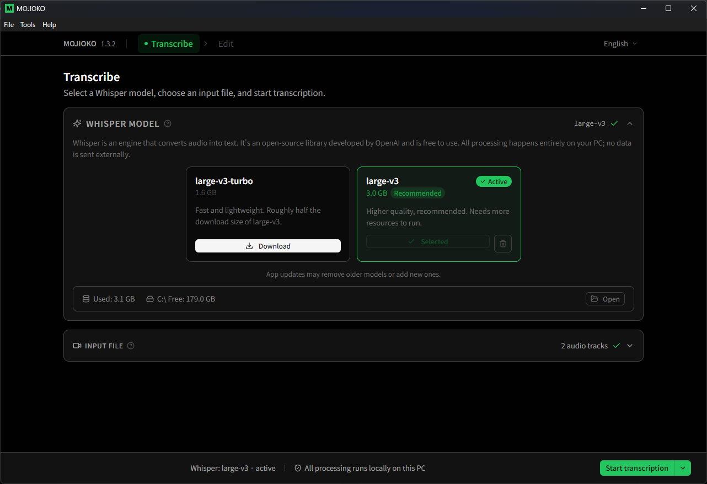
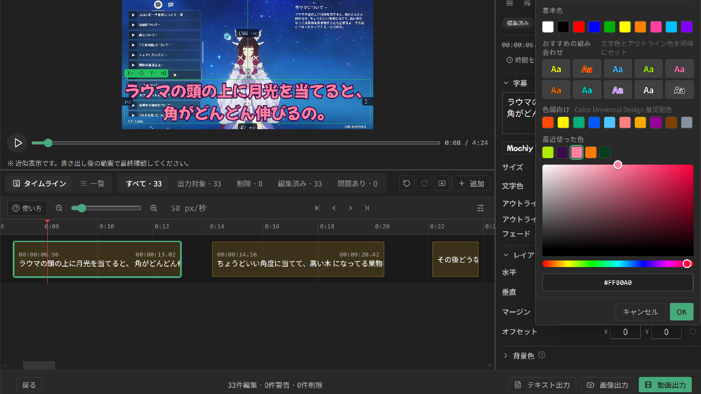
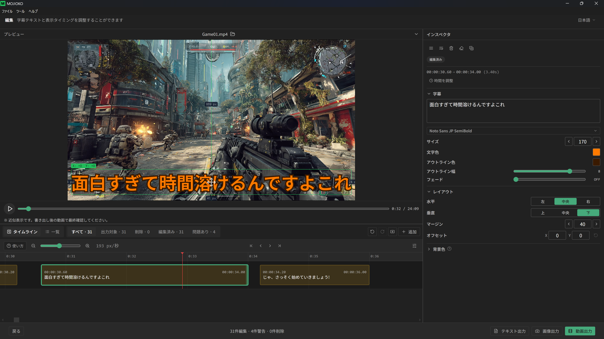
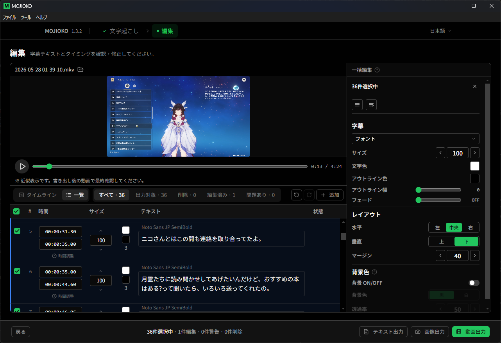
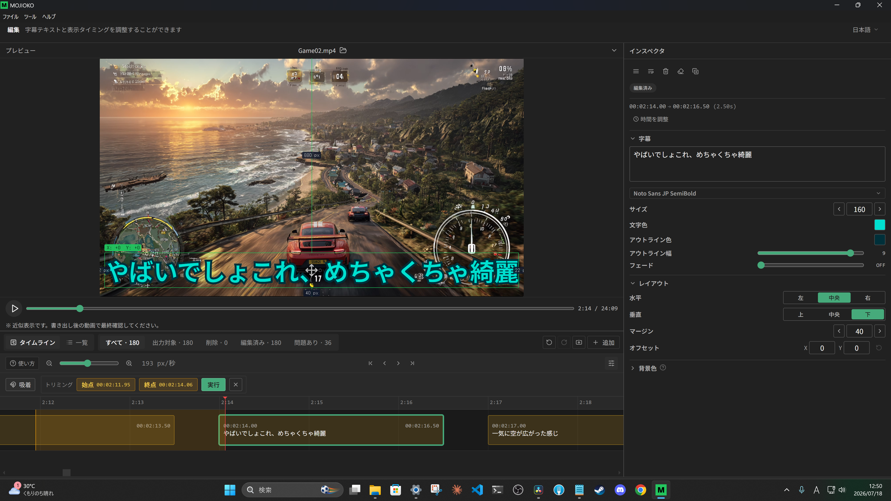
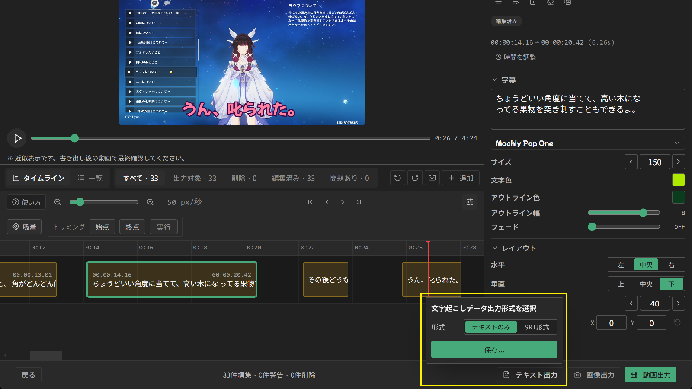
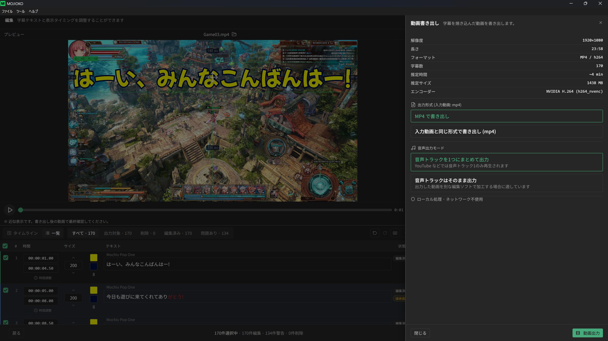
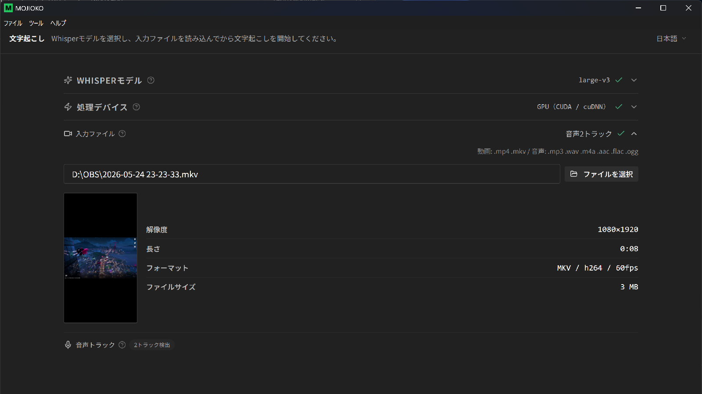

文字起こし字幕動画作成ツール

動画や音声から、AIが自動で文字を書き起こします。使っているのは、OpenAI が開発した「Whisper」という高精度な音声認識AI。長い動画でも、話している内容をまとめてテキスト化できます。
動画ファイル・音声ファイルのどちらにも対応。複数の音声が入った動画でも、文字起こししたい音声を選べます。
💡 マルチトラック音声とは？ゲーム音とマイク音声など、複数の音が別々に記録された動画のこと。MOJIOKO なら、その中から声だけを選んで文字起こしできます。

書き起こしたテキストの修正はもちろん、フォントの変更（有料版のみ）、文字の大きさ・色、フチの色・太さまで、字幕の見た目を細かく調整できます。

字幕が表示される長さを、タイムライン上でドラッグするだけで直感的に変更できます。

書き起こした字幕を一覧で見渡して、まとめて確認・一括編集ができます。

いらない区間をタイムライン上でカットできます。
💡 タイムラインとは？動画の時間の流れを横棒で表したもの。どの字幕がいつ表示されるかを、視覚的に編集できます。

書き起こしたテキストを、テキストファイルや SRT 形式で書き出せます。
SRT で書き出せば、DaVinci Resolve などの動画編集ソフトに、字幕の開始・終了時間ごと取り込めます。字幕をタイムラインに載せる作業がぐっと楽になります。
書き出したテキストは、VOICEVOX などの音声合成ソフトに読み込んで、ずんだもんなどの音声を作る、といった使い方もできます。
💡 SRT形式とは？字幕の「文章」と「表示する時間」をセットで記録した、字幕ファイルの標準形式。多くの動画編集ソフトや動画サイトが対応しています。

編集した字幕を、動画に直接焼き込んで書き出せます。
複数の音声を1つにまとめて出力できるので、YouTube などにそのまま投稿できる動画が作れます。
💡 焼き込みとは？字幕を映像の一部として動画に埋め込むこと。焼き込んだ字幕は、どの環境で再生しても必ず表示されます。

ショート動画スクリーンショット縦型動画（9:16）にも対応。MKV、MP4 を読み込み、MP4 形式で書き出し可能。TikTok、YouTube Shorts、Instagram Reels の字幕制作に活用できます。
MOJIOKO は無料でご利用いただけます。お役に立てましたら、開発の支援をご検討ください。
グローバル・アカウント不要・$3〜
PayPay・コンビニ・クレジットカード対応・¥300〜
月額・単発どちらも可能・GitHub アカウント必要
ローカル PC で完結するため、動画データを外部にアップロードする必要はありません。
使い方ガイド よくある質問・OBS 設定方法 不具合報告 & ご要望 ご意見・ご要望はこちら